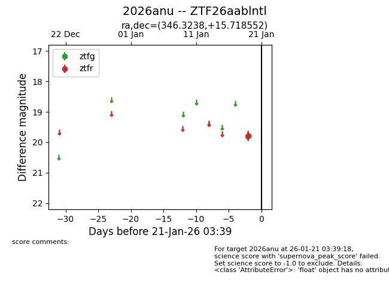
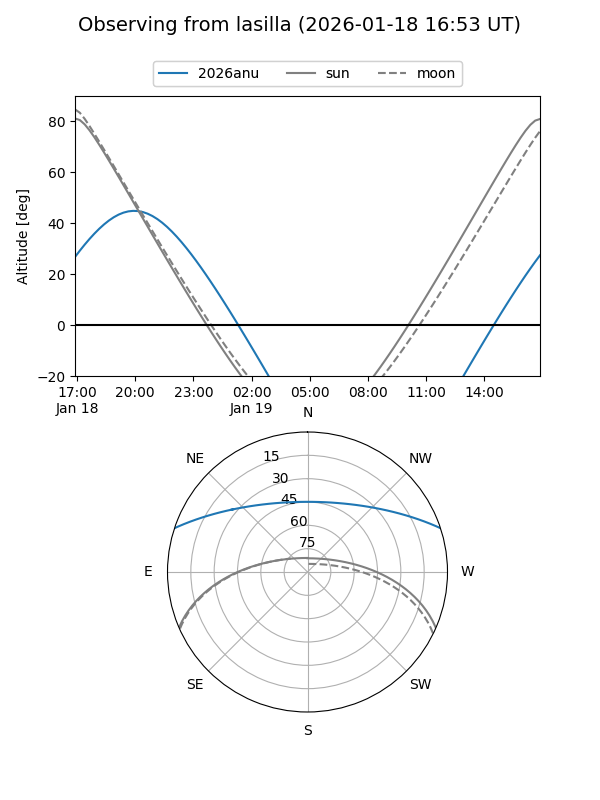
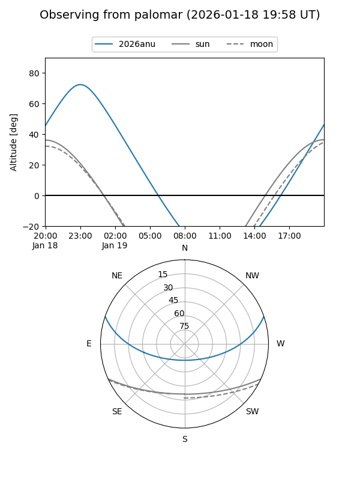

2026anu
Target 2026anu at 2026-01-19 03:40
Aliases and brokers:
FINK: link
Lasair: link
ALeRCE: link
TNS: link
YSE: link
alt names
ZTF26aablntl (ztf,fink_ztf)
2026anu (tns,yse)
Coordinates:
equatorial (ra, dec) = 346.3238,+15.71855
equatorial (HMS+DMS) = 23:05:17.72,+15:43:06.79
galactic (l, b) = (88.7742,-40.01036)
Flags:
Photometry:
last ztfr=19.79
1 ztfr detections
Lightcurve

Visibility


Additional plots